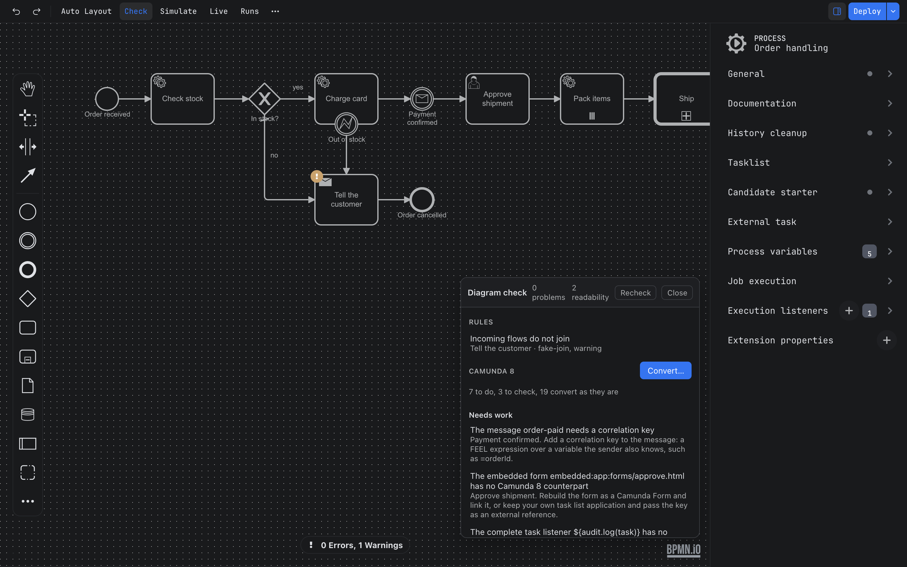

Guide / Start here
Getting started
From nothing installed to a checked, deployed process in about ten minutes.
1. Get Penstock
Penstock comes in more than one form. The features are the same in each. Pick the one you use.
Get Penstock
JetBrains
Install the plugin from the JetBrains Marketplace, in any JetBrains IDE from 2025.2. It takes two minutes. See Installing in a JetBrains IDE.
Command line
There is nothing to install. Run npx @penstock/cli, or let a project pin a version with a wrapper script. It needs Node.js 20.19 or later. See Command line.
Every machine starts with 30 days of Pro. See Plans and licence.
2. Try the example
The quickest way to see everything work is the example: a small order process with workers, a decision, a form and test cases. The example project explains every file. Write it into an empty folder.
Write the example
JetBrains
Open an empty project and open the Penstock tool window. It offers Camunda 8 order process and Camunda 7 order process. Press one and confirm the dialog Start from an example with Create. A notification says where the example is.
Command line
In an empty folder run penstock init --example camunda-8, or --example camunda-7. It writes the files and the penstockw wrapper.
penstock init --example camunda-83. Look at it, check it, deploy it
- Open
src/main/resources/order-process.bpmnin the editor. The diagram appears. - Press Check. A card lists what is wrong. A fresh example has nothing wrong. See Diagram check.
- Press Deploy. The first time, Penstock asks for the engine address. Enter it and deploy again. See Deployment.
Do it in your tool
JetBrains
Open the file from the Project view or the Penstock tool window. Check and Deploy are on the editor's toolbar.
Command line
There is no editor, so use the commands:
penstock check .
penstock deploy . --dry-run
penstock deploy .Start with your own diagram
- Open a
.bpmnfile. If you have none, create a file calledprocess.bpmnand open it. An empty file is fine. - If the diagram says nothing about its engine, one line appears above the canvas: Which engine runs this diagram? Press Camunda 8, Operaton, CIB seven, Camunda 7 or Plain BPMN. The answer is written to
penstock.yamlin the project root. It is asked once. - Draw. Drag elements from the palette on the left, or click an element and use the small pad next to it. Editing a diagram shows how.
- Select an element and fill in its properties on the right. The properties panel explains the groups.
- Press Check. Fix what it lists.
Open a diagram
JetBrains
Double-click a .bpmn file in the Project view or in the Penstock tool window. The BPMN Editor and Text tabs at the foot of the editor switch between the picture and the XML. See The editor in the IDE.
Command line
Not available on the command line. The command line has no editor. Use penstock show to list a diagram and penstock edit to change it.
What you see

- Toolbar along the top. Undo and Redo are on the left. Deploy is on the right. Everything else is in the More menu. See The toolbar and the More menu.
- Palette at the left edge of the canvas, with the elements you can draw.
- Canvas in the middle. It takes the theme of your tool.
- Properties panel on the right, for the selected element.
Which files open in the editor
| Files | Opens in |
|---|---|
.bpmn, .bpmn.xml, .bpmn20.xml | The BPMN editor |
.dmn | The DMN editor |
.form that is a Camunda Form | The form editor |
Where to go next
Common problems
- Deploy is missing from the toolbar.
- Deploy is shown for Camunda 7, Camunda 8, Operaton and CIB seven projects. A Plain BPMN project has none. Change the engine in
penstock.yaml. - The question about the engine did not appear.
- It appears only for an empty diagram. A diagram that already says which engine it is for, or a project with
engineinpenstock.yaml, is not asked. - The example was not written.
- An example is written only into an empty folder, so it never overwrites your files.